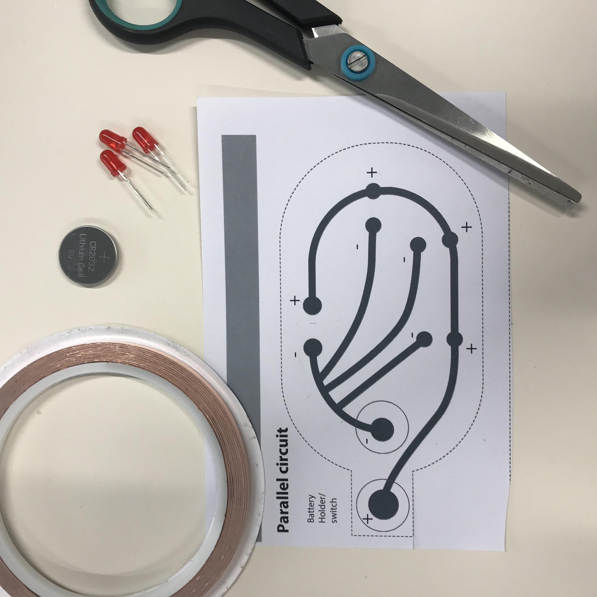
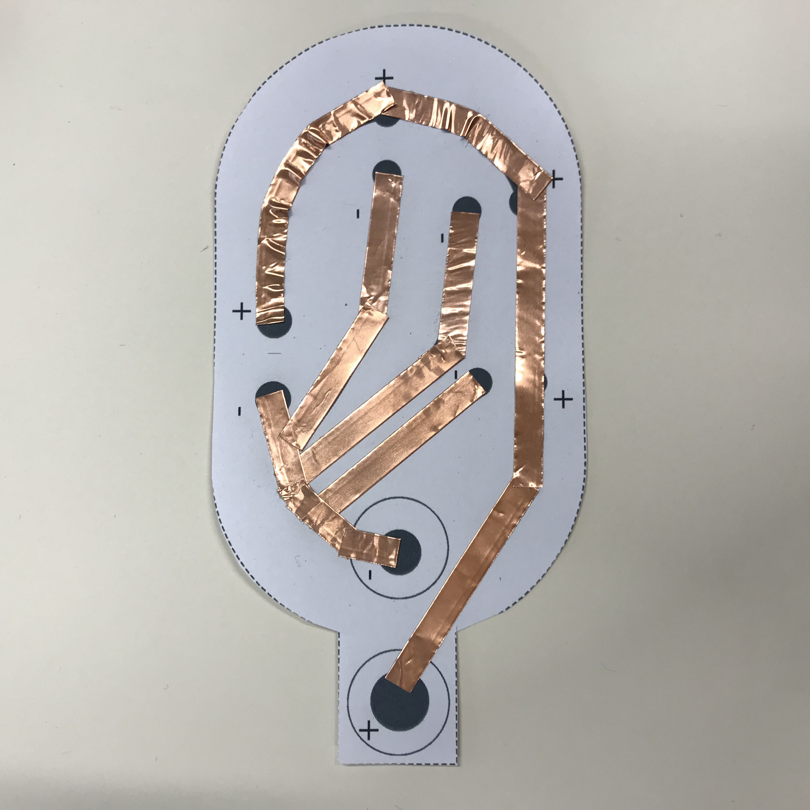
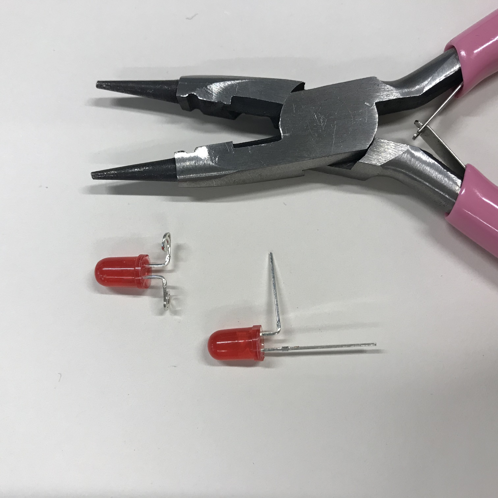
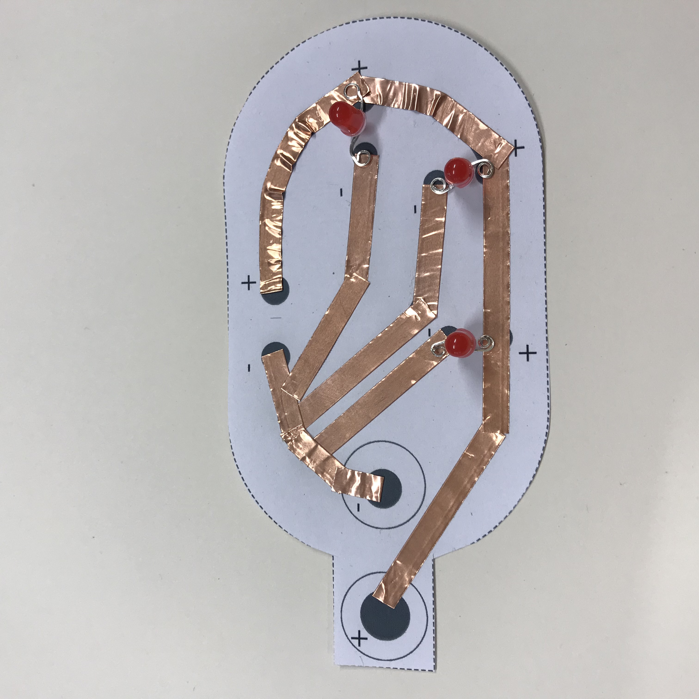
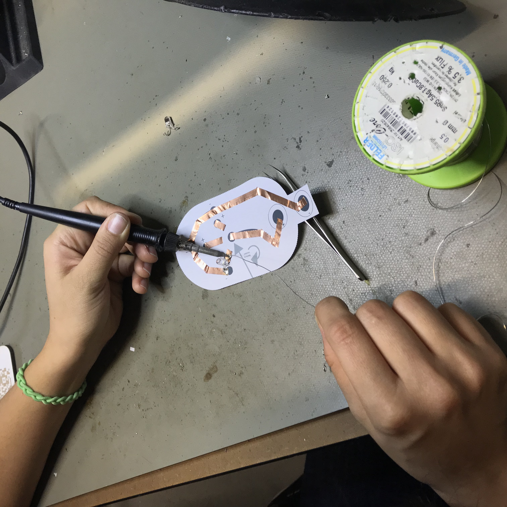
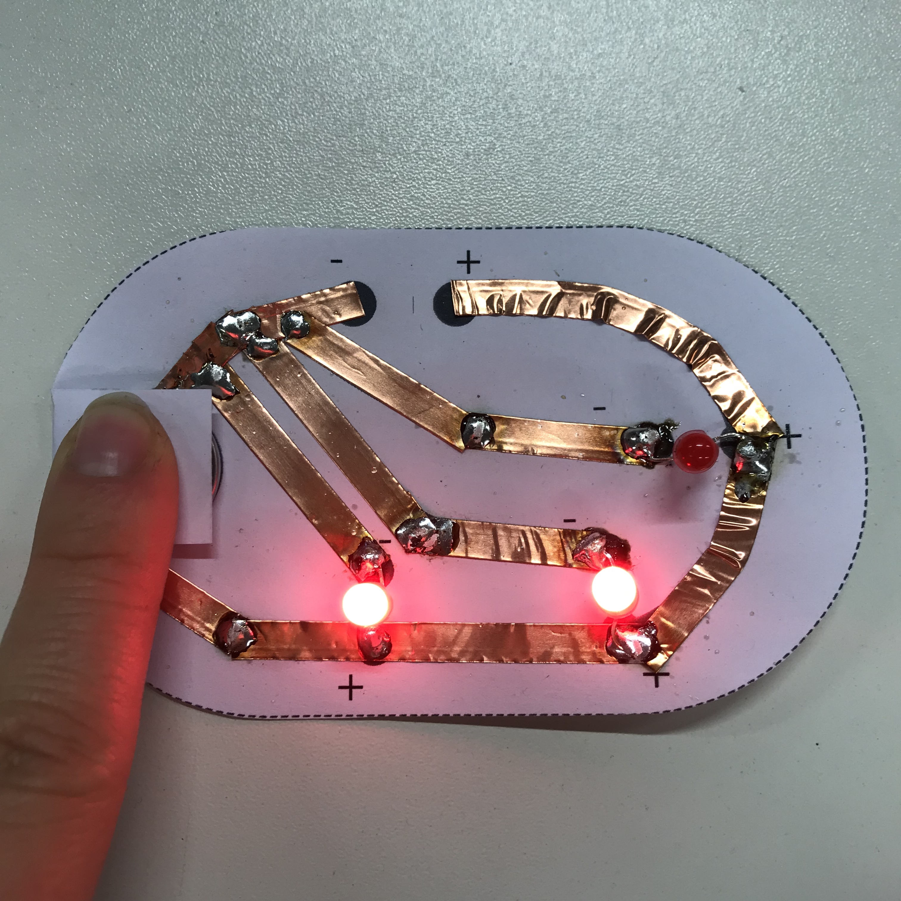

Week 2
Paper Electronics
Creating a Circuit
This week we learned how to make a somple electric circuit. An electrical circut is a path or line through wich an electrical current flows. By doing this assignmend one have to think about the circuit and what exaclty one want to do. One have to think about the switch and battery and where and how to put them.
How To
Step 1
What do you exactly want to do? That is the first thing you have to think about, when you want to build a circuit. You have to think about where to put the battery and how to build the switch.
Step 2
This week I decided to make my first own circuit with an template.

Step 3
For the first step you have to cover all the black lines with copper tape. This can be done in two way: in a continuous line, by bending the table or in more single lines, by cutting the tape. In the second way, everything will look a bit more accurate, but you also have to solder the parts. that overlap.

Step 4
In the next step, you will cut the LED’s and place them in the correct way on your circuit. How to place them in the right way, you can find here.


Step 5
After that you need to solder the lamps. How soldering works, you can find out here.

Step 6
After soldering you will put a 3V battery in the given place. By pressing down the paper on the left side, the circuit should work. In my case I soldered one LED in the wrong direction and that’s why it isn’t working.
